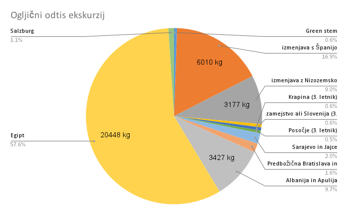

Kaj je energija?
Obstajajo različne definicije energije, vsem pa je skupna ugotovitev: energija je sposobnost sistema in
telesa, da opravlja delo.
Osnovna enota za merjenje energije je joule [džul]. V gospodinjstvu
uporabljamo pri obračunu porabljene električne energije enoto kilovatna ura (1 kWh, kar ustreza
delu, ki ga opravi porabnik z močjo 1 kW v eni uri). Je fizikalna enota za delo in energijo (1 KWh je
enaka 3,6 MJ). Enota za energijo je tudi toe (tona ekvivalenta nafte), ki pomeni količino
energije,
ki se sprosti s sežigom 1 tone surove nafte. Toe se uporablja za prikaz velikih količin energije (1 toe
= 41,87 GJ = 11,63 MWh).
Energijo v vsakdanjem življenju potrebujemo za pripravo in shranjevanje hrane, za toplo vodo, za
vzdrževanje primernih bivalnih pogojev (ogrevanje, ohlajanje), za pogon prevoznih sredstev, za
razvedrilo itd.
V energetiki poznamo oblike energije, ki jih označimo glede na stopnjo v pretvorbi iz oblik, ki jih ne
moremo neposredno uporabiti, v take, ki jih potrebujemo (na primer doma):
- primarna energija (skrita v nosilcih energije),
- sekundarna energija (npr. elektrika pridobljena iz premoga v termoelektrarni),
- končna energija (dobi jo uporabnik),
- koristna energija (za zadovoljevanje potreb uporabnika, npr. toplota na električni kuhalni
plošči).
Vir[3]: golea.si
Zakaj pa govorimo o energiji?
Kot spodnja slika zelo nazorno prikazuje, je energija glavni vir ogljičnega odtisa. Kar ¾ svetovnih
izpustov CO2 povzroči naša uporaba energije.

Vir slike[2]: ourworldindata.org
Jasno je, da brez zmanjšanja emisij v tem sektorju ne bomo naredili dovolj velikega učinka na ogljični
odtis, zato bomo največ časa posvetili ravno analizi uporabe energije na Gimnaziji Vič.
Kateri sektorji spadajo pod energijo?
Onesnaževanje z uporabo energije povzroči daleč največji ogljični odtis. Pojem poraba energije je
širok in se nanaša na več različnih sektorjev. Najbolj vplivni sektorji so:
- energija, ki se porabi v industriji (ta se deli na železarstvo, steklarstvo, kovinska,
kemična,
živilska, papirna, lesna, strojna in tekstilna industrija, med katerimi najbolj onesnažujeta
železarstvo in kemična industrija)
- energija, ki se porabi v prometu (deli se na potniški in transportni)
- energija, ki se porabi v posameznih stavbah (domovih ali drugih javnih ustanovah).
Raba energije na Gimnaziji Vič
Poraba elektrike
Gimnazija Vič med šolskim letom porabi med 15 MWh in 20 MWh mesečno, od tega porabimo največ pozimi, za
kar je verjetno vzrok večja uporaba luči. Skupaj smo v enem letu porabili 194 MWh.

Taka poraba pomeni izpuste CO2 med 5000kg in 9000kg na mesec. To pomeni da v enem letu
izpustimo v ozračje približno 80 ton CO2. To je v primerjavi z radioaktivnimi
odpadki zelo velika številka, saj je naša poraba električne energije povzročila zgolj 91
gramov radioaktivnih odpadkov.
Ogrevanje sanitarne vode in prostorov
Na Gimnaziji Vič ogrevamo prostore in sanitarno vodo s zemeljskim plinom (in malo pomoči kolektorjev).
Poraba plina je zaradi nižjih zunanjih temperatur najvišja januarja. Takrat porabimo kar 64 MWh energije
v obliki plina. Z uporabljenim podatkom emisij zemeljskega plina (202 g/kWh energije*), je v januarju
ogljični odtis ogrevanja znašal 12,9t CO2. V enem letu pa poraba plina 287 MWh, kar ustreza
emisijam 58t CO2.
Spodnji graf prikazuje porabo plina na Gimnaziji vič:

Skupaj z elektriko porabimo v enem letu 480 MWh energije.
Prihod dijakov v šolo
Za ovrednotenje ogljičnega odtisa poti v šolo smo sodelovali z ekipo Mobilnost prihodnosti, in sestavili
anketo. Na anketo o prihodu v šolo je odgovorilo 89/97 dijakov, kar je približno polovica 2. letnika. O
prihodu v šolo smo zbirali naslednje podatke: dolžina poti v šolo in prevozno sredstvo.
Dolžino poti v šolo smo razdelili v 6 kategorij (89 dijakov):
- Manj kot 1 km (povprečje: 0,5 km): 10 dijakov
- 1 do 2 km (povprečje: 1,5 km): 12 dijakov
- 2 do 5 km (povprečje: 3,5 km): 23 dijakov
- 5 do 10 km (povprečje: 7,5 km): 19 dijakov
- 10 do 20 km (povprečje: 15 km): 15 dijakov
- Več kot 20 km (povprečje: 25 km): 10 dijakov
Prevozno sredstvo za prihod v šolo smo razdelili v pet kategorij (97 dijakov):
- Avtomobil: 16 dijakov (16,5%)
- Avtobus: 41 dijakov (42,3 %)
- Vlak: 2 dijaka (2,1%)
- Električni skiro: 1 dijak (1,0%)
- Kolo ali peš: 37 dijakov (38,1%)
Za oceno emisij CO₂ smo uporabili naslednje vrednosti:
- Osebni avtomobil: 184 g CO₂/km
- Avtobus: 45 g CO₂/km na potnika
- Vlak: 31 g CO₂/km na potnika
- Električni skiro: 7 g CO₂/km
- Kolo in peš: 0 g CO₂/km
Izračunali smo, da je prihod v šolo povprečnega dijaka odgovoren za 810g CO2.
Skupne emisije za celotno šolo (744 dijakov):
810g * 744dijakov = 603'600g
Skupne emisije v 1 letu (190 šolskih dni):
114t CO2
Ekskurzije
Ogljični odtis ekskurzij in izmenjav smo izračunali s pomočjo naslednjih podatkov:
- Poraba avtobusa: 24 L/ 100km
- Emisije dizla in bencina povprečno: 2,6 kg CO2 / L
- Poraba letala: 3kg/100km/potnika
- Emisije kerozina: 3.15 kg CO2/kg goriva
Spodnji tortni prikaz vsebuje zbrane podatke o ekskurzijah v letu 2024/25:

 EN
EN